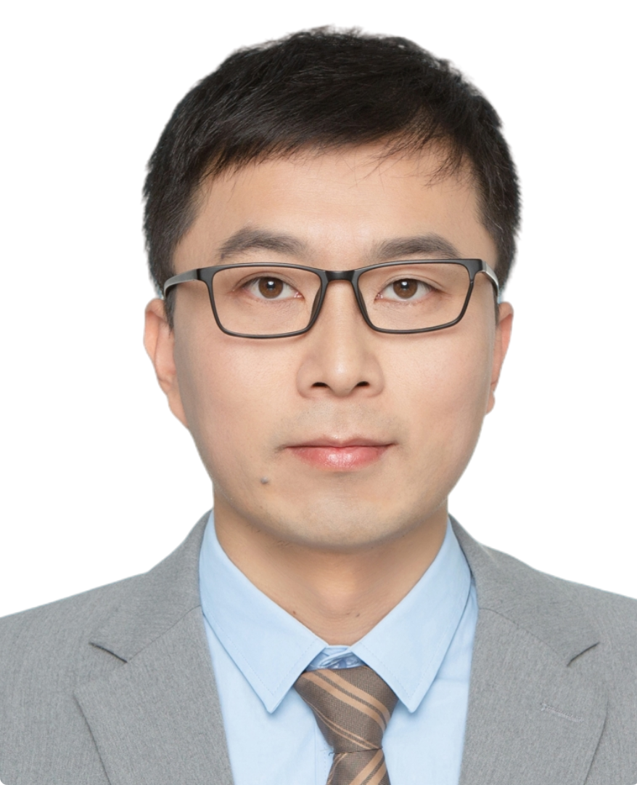

Principal Investigator
姚丹阳
工学博士 / 长聘副教授 / 硕士生导师
姚丹阳老师主要从事集成光电子、微纳光子操纵与光信息处理芯片研究。2010 年获西安电子科技大学微电子学院理学学士学位， 2015 年获中国科学院半导体研究所工学博士学位。2015—2020 年在华为中央研究院全光实验室工作， 历任工程师、高级工程师及项目经理。2020 年加入西安电子科技大学微电子学院郝跃院士团队。
- 研究方向：集成光电子、微纳光子操纵、光信息处理芯片、声光/电光调制器件
- 代表成果：OEA、ACS Photonics、Optics Letters、Optics Express 等期刊论文
- 招生信息：2026 年有 1 个硕士指标，可联系 dyyao@xidian.edu.cn